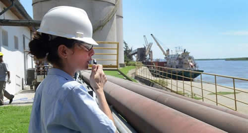

Real Chubut - Agencia de Noticias


Biodiesel: piden al Gobierno que recurra ante OMC la decisión de EEUU de imponer arancel

El titular de la Cámara de Biocombustibles (Carbio), Luis Zubizarreta, consideró este viernes "Estados Unidos está en proceso de cerrar su economía y pagamos el costo nosotros" en el tema biodiesel y afirmó que "es clave que el Gobierno recurra a la Organización Mundial del Comercio (OMC), no hay otro camino".
"La medida absolutamente proteccionista de Estados Unidos se esperaba pero no por eso deja de ser injusta e irracional y sin asidero técnico y jurídico, pese al enorme esfuerzo de Cancillería; Estados Unidos está en un proceso de cierre de su economía y pagamos un poco el costo nosotros", agregó en declaraciones a Télam Radio.
El directivo rechazó la investigación del Departamento de Comercio de Estados Unidos, que el jueves oficializó la imposición de aranceles compensatorios de hasta 72% para sus importaciones de biodiesel desde la Argentina.
La determinación llegó tras la aplicación de gravámenes transitorios anteriores, luego de que Estados Unidos concluyera que su industria local "está materialmente perjudicada por importaciones subsidiadas".
"Investigan subsidios que no existen, eso cierra mercados, algo importante para Argentina porque no tiene muchos productos de exportación y, como todos saben, el más importante es la soja y uno de los grandes desafíos es generar industrias a través de la soja para vender con más valor agregado y más trabajo", explicó.
En ese sentido, mencionó que "uno de esos productos es el biodiesel, por lo que se reprimarizan las exportaciones en la medida que se cierran mercados: hay que ir un grado atrás en los productos que se venden y, por lo tanto, son solo materias primas".
Zubizarreta reseñó que el caso con Estados Unidos "va en paralelo con una causa similar con la Unión Europea (UE), que llevó cinco años, en la que Argentina logró revertir (vía OMC) una medida en el mismo sentido y ahora se puede exportar nuevamente a ese mercado".
"Es clave que el Gobierno recurra al Órgano de Solución de Diferencias la OMC y entendemos que esa es la intensión, no hay otro camino", añadió.
Argentina ganó en la OMC una controversia similar con la UE, que había impuesto derechos compensatorios a las importaciones de biodiésel argentino también por alegar dumping.
En noviembre de 2013 la UE impuso un derecho compensatorio de 24,6%, por lo que Argentina recurrió a la OMC y, en octubre último, la OMC determinó en segunda y última instancia que la medida era incompatible con varios artículos del Acuerdo Antidumping, entre ellos el referido al cálculo de costos de producción para determinar la existencia de dumping.
En cuanto a la UE, Zubizarreta consideró que "es un mercado importante pero va a traccionar menos volumen (que el de Estados Unidos) pero el objetivo es mantener todos los mercados abiertos porque eso es lo que permite conseguir mejores precios para la producción".
"El productor agropecuario es el más perjudicado porque vende a un precio más bajo y Argentina necesita incrementar sus exportaciones", concluyó.
El listado de exportadores argentinos incluido en la medida abarca aranceles compensatorios de 72,28% para Dreyfus Corporation, de 71,45% para Vicentín, y de 71,87% para el resto de las empresas.
Con ello, concluyó ayer el tratamiento del gobierno de Estados Unidos sobre la disputa, determinación adversa esperada por las autoridades argentinas, que ya a principios de noviembre habían adelantado mediante la Cancillería que el país recurrirá al Órgano de Solución de Diferencias de la Organización Mundial del Comercio (OMC).
Fuente: Ambito